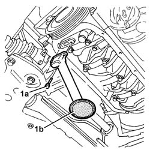

1084B28 ENGINE OIL INTAKE PUMP - R + R WITH CRANKCASE SUMP REMOVED
- Path
- Procedures > 10 ENGINE UNIT > 1084 ENGINE LUBRICATION SYSTEM > 1084B ENGINE OIL LUBRICATION CIRCUIT > 1084B28 ENGINE OIL INTAKE PUMP - R + R WITH CRANKCASE SUMP REMOVED
- Kind
- repair procedure (removal / refitting; the operation number is the code)
- Applies to
- engines: 1.9 JTD 16V; all production periods
- Interactive page
- https://sloeber94.github.io/elrnDB-aGt/en/#/125001159
Applies to: engines: 1.9 JTD 16V; all production periods
 Removing
Removing
 Refitting
Refitting1. Undo the bolts (1a) and remove the engine oil intake duct (1b).
Remove the gasket.

Applies to: engines: 1.9 JTD 16V; all production periods
Refitting
RemovingPosition the engine oil intake duct complete with gasket in its housing and secure it using the olts.